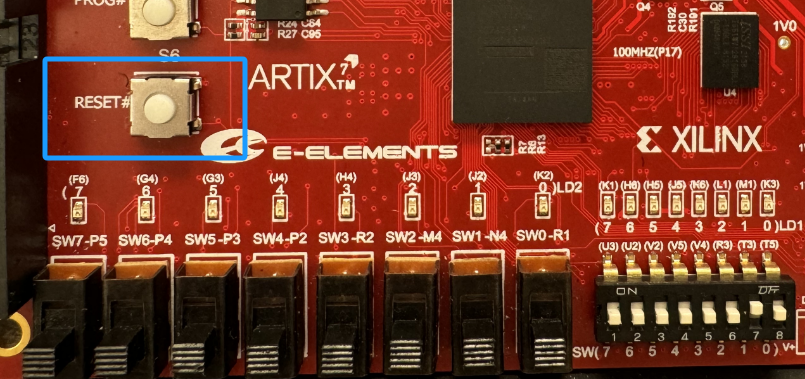

数字逻辑：时序逻辑入门——计数器与分频器
实验目标
- 掌握
always @(posedge clk or negedge rst_n)语句的使用 - 学会设计计数器（二进制计数器、模N计数器）
- 学会设计分频器，把 100MHz 高频时钟变成需要的低频信号
- 完成LED闪烁实验（1Hz），体验"会自己动的电路"
1. 认识时钟信号
EGO1 开发板上有一个 100MHz 的晶振，连接到 FPGA 的 P17 引脚。它会持续产生一个方波信号：
┌──┐ ┌──┐ ┌──┐ ┌──┐ ┌──┐
clk: │ │ │ │ │ │ │ │ │ │
────┘ └──┘ └──┘ └──┘ └──┘ └──
↑ ↑ ↑ ↑ ↑
上升沿 上升沿 上升沿 上升沿 上升沿
- 频率：100MHz = 每秒 1 亿次跳变
- 周期：10ns（即每隔 10ns 重复一次）
- 上升沿：信号从 0 变为 1 的瞬间
这个时钟信号就像电路的"心跳"，我们的设计将跟随它的上升沿一步一步工作。
约束文件中的写法：
set_property PACKAGE_PIN P17 [get_ports clk] set_property IOSTANDARD LVCMOS33 [get_ports clk]
2. 新语法：always @(posedge clk or negedge rst_n)
2.1 基本写法
前几次实验我们用的 always @(*) 描述的电路是"输入变→输出立刻跟着变"。现在我们学一种新写法，让电路能自动地、一拍一拍地变化：
always @(posedge clk or negedge rst_n) begin
if (!rst_n)
// 复位：把寄存器设为初始值
else
// 正常工作：在每个时钟上升沿执行一次
end
逐行解释：
- posedge clk：每当时钟上升沿到来，执行 begin...end 中的操作
- negedge rst_n：当复位信号 rst_n 变为低电平（按下复位键），立刻执行复位
- if (!rst_n)：如果复位信号为低（rst_n = 0），则把所有寄存器清零/设为初始值
- else：复位未激活时，正常工作
2.2 复位规范
本课程统一使用低电平有效复位，即 rst_n（n 代表 negative/active-low）：
| 操作 | 写法 |
|---|---|
| 端口声明 | input rst_n |
| 敏感列表 | always @(posedge clk or negedge rst_n) |
| 复位条件 | if (!rst_n) |
| 板上按键按下 | rst_n = 0（复位激活） |
| 按键松开 | rst_n = 1（正常工作） |
Ego1开发板有专门的复位键，如图所示，低电平有效，引脚是P15。

2.3 赋值规则
在 always @(posedge clk or negedge rst_n) 块中，使用 <= 赋值：
always @(posedge clk or negedge rst_n) begin
if (!rst_n)
count <= 4'd0; // 用 <=
else
count <= count + 1; // 用 <=
end
简单记：
- always @(*) 组合逻辑块 → 用 =
- always @(posedge clk ...) 时序逻辑块 → 用 <=
- 不要混用
2.4 reg 类型
在这种 always @(posedge clk ...) 块中赋值的信号，会被综合成真正的寄存器——它能"记住"上一拍的值，每个时钟沿更新一次。所以输出端口要声明为 reg 类型。
3. 计数器设计
3.1 4位二进制计数器
最简单的计数器——每个时钟上升沿加 1：
module counter_4bit (
input clk,
input rst_n,
output reg [3:0] count
);
always @(posedge clk or negedge rst_n) begin
if (!rst_n)
count <= 4'd0;
else
count <= count + 1'd1;
end
endmodule
行为：复位后 count = 0，之后每拍加 1，计到 15 后溢出回到 0，循环往复。
3.2 模N计数器
如果需要计到特定值后归零（例如 0~9），加一个判断即可：
module counter_mod10 (
input clk,
input rst_n,
output reg [3:0] count
);
always @(posedge clk or negedge rst_n) begin
if (!rst_n)
count <= 4'd0;
else if (count == 4'd9)
count <= 4'd0; // 到9归零
else
count <= count + 1'd1;
end
endmodule
3.3 参数化模N计数器（带使能和进位）
实际项目中，计数器通常需要使能信号（en）控制是否计数，以及进位输出（carry）用于级联多个计数器：
module counter_mod #(parameter MOD = 10) (
input clk,
input rst_n,
input en,
output reg [3:0] count,
output carry
);
assign carry = (count == MOD - 1) && en;
always @(posedge clk or negedge rst_n) begin
if (!rst_n)
count <= 4'd0;
else if (en) begin
if (count == MOD - 1)
count <= 4'd0;
else
count <= count + 1'd1;
end
end
endmodule
使用示例：
counter_mod #(.MOD(10)) u_cnt10 (
.clk(clk), .rst_n(rst_n), .en(enable),
.count(count_out), .carry(carry_out)
);
4. 分频器设计
4.1 为什么需要分频器？
EGO1 的时钟是 100MHz（每秒 1 亿个时钟周期），但实际应用需要的频率低得多：
| 用途 | 目标频率 | 需要计数的值 |
|---|---|---|
| LED闪烁 | 1Hz | 100,000,000 |
| 数码管扫描 | ~1kHz | 100,000 |
| 秒表基准 | 100Hz | 1,000,000 |
分频器 = 一个计数器，计满后输出一个脉冲。
4.2 分频器原理
要将 100MHz分频为 1Hz： - 1Hz 意味着每秒输出一个脉冲 - 100MHz 每秒有 1 亿个时钟周期 - 所以需要每计数到 1 亿（100,000,000）时输出一个脉冲
4.3 分频器实现（脉冲输出）
module clk_div #(parameter MAX_COUNT = 100_000_000) (
input clk,
input rst_n,
output reg tick // 分频后的单周期脉冲
);
reg [31:0] cnt;
always @(posedge clk or negedge rst_n) begin
if (!rst_n) begin
cnt <= 32'd0;
tick <= 1'b0;
end else if (cnt == MAX_COUNT - 1) begin
cnt <= 32'd0;
tick <= 1'b1; // 计满，产生一个脉冲
end else begin
cnt <= cnt + 1'd1;
tick <= 1'b0; // 其余时刻保持低
end
end
endmodule
tick 只在计满的那一个时钟周期为高电平，其余时间为低。这叫单周期使能脉冲。
parameter 用于定义一个可在模块被调用（例化）时灵活修改的常量，从而让同一段代码无需修改源码就能适应不同的配置需求，极大地提高了代码的复用性。
重要：不要用分频产生的信号当作其他模块的时钟（如
always @(posedge slow_clk)）。正确做法是所有模块共用系统时钟clk，用tick脉冲作为使能信号。
4.4 参数化使用示例
// 1Hz —— LED闪烁
clk_div #(.MAX_COUNT(100_000_000)) u_1hz (
.clk(clk), .rst_n(rst_n), .tick(tick_1hz)
);
// 1kHz —— 数码管扫描
clk_div #(.MAX_COUNT(100_000)) u_1khz (
.clk(clk), .rst_n(rst_n), .tick(tick_1khz)
);
// 100Hz —— 秒表基准
clk_div #(.MAX_COUNT(1_000_000)) u_100hz (
.clk(clk), .rst_n(rst_n), .tick(tick_100hz)
);
5. Testbench 仿真技巧
5.1 时钟信号生成
reg clk;
initial clk = 0;
always #5 clk = ~clk; // 周期10ns = 100MHz
#5 表示延迟 5ns，每 5ns 翻转一次，产生 10ns 周期的时钟。
5.2 复位信号生成（低电平有效）
reg rst_n;
initial begin
rst_n = 0; // 一开始按下复位（低有效）
#25;
rst_n = 1; // 松开复位，开始正常工作
end
5.3 仿真加速技巧
分频 100MHz → 1Hz 需要模拟 1 亿个时钟周期，仿真会极慢。仿真时把分频系数改小：
// 仿真时：MAX_COUNT = 10，10个周期就出一个tick
clk_div #(.MAX_COUNT(10)) u_div_sim (
.clk(clk), .rst_n(rst_n), .tick(tick)
);
5.4 完整 Testbench 示例
`timescale 1ns/1ps
module tb_counter_4bit();
reg clk;
reg rst_n;
wire [3:0] count;
// 实例化
counter_4bit uut (
.clk (clk),
.rst_n (rst_n),
.count (count)
);
// 100MHz 时钟
initial clk = 0;
always #5 clk = ~clk;
// 测试序列
initial begin
$monitor("time=%4d: rst_n=%b count=%d", $time, rst_n, count);
rst_n = 0; // 复位
#25;
rst_n = 1; // 松开复位，开始计数
#200; // 观察计数
rst_n = 0; // 再次复位
#20;
rst_n = 1;
#100;
$finish;
end
endmodule
6. 实验练习
练习1：LED闪烁（1Hz）
功能要求：让 EGO1 上的一个 LED 以 1Hz 频率闪烁（亮 0.5 秒，灭 0.5 秒）。
步骤
- 编写代码：创建
clk_div.v和led_blink.v - 仿真验证：编写 Testbench，将分频系数改为 10，观察
tick和led翻转波形 - 引脚约束与上板：
clk→ P17（100MHz 晶振）rst_n→ P15 （复位键）led→ 绑定一个 LED- 综合、生成比特流、下载，观察 LED 闪烁
练习2（选做）：4位二进制计数器 + LED显示
功能要求：用 4 个 LED 显示一个 4 位二进制计数器，每秒加 1。
步骤
- 编写代码：使用分频器产生 1Hz 脉冲，4 位计数器每收到脉冲加 1，计数值连接到 4 个 LED
- 仿真验证：验证计数器 0→1→2→...→15→0 循环
- 上板验证：观察 LED 以二进制方式显示计数值（约 16 秒一个循环）
思考题：如果要让计数器只计数 0~9（模10），需要修改哪里？
附录：常见问题
-
问：计数器溢出了怎么办？ 答：4 位计数器（
[3:0]）计到 15 再加 1 会自动回到 0。如果需要到特定值归零，加if (count == 目标值)判断即可。 -
问：仿真时分频器不产生脉冲？ 答：检查仿真时间是否足够长。建议仿真时将分频系数改小（如
MAX_COUNT = 10），不要用 1 亿去仿真。 -
问：分频器产生的信号可以直接当时钟用吗？ 答：强烈不建议。在 FPGA 中应该只用一个全局时钟
clk，用分频器产生的tick脉冲作为使能信号控制逻辑。用多个时钟会引入跨时钟域问题，很容易出错。 -
问：为什么复位用
rst_n（低有效）而不是rst（高有效）？ 答：EGO1 开发板上的复位按键按下时输出低电平，松开时输出高电平。使用低有效复位与硬件行为一致，按下按键 = 复位，松开 = 正常工作。